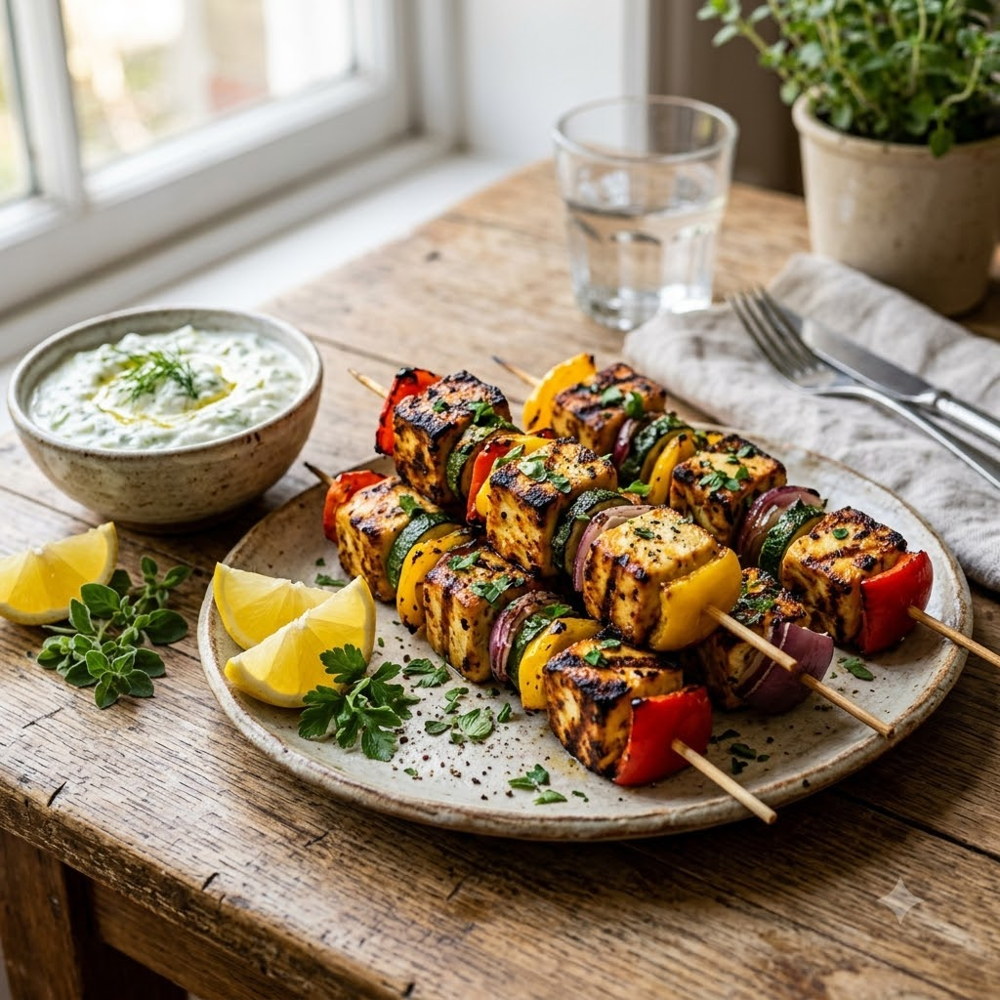

Paneer Souvlaki Skewers (Greek-Style)

Paneer Souvlaki Skewers (Greek-Style)
Airfryer – Grill 200°C 14 min — Serves 4
Gluten-Free • Vegetarian • High-Protein • Mediterranean • Everyday
🔥 Airfryer🍽 Serves 4
Prep ahead: Marinate the paneer for at least 20 minutes for the best flavour.
Ingredients
- 400g paneer, cubed
- 3 tbsp olive oil
- 2 tbsp lemon juice
- 2 cloves garlic, minced
- 1 tbsp dried oregano
- Salt & pepper to taste
- Bell pepper & red onion, cubed (optional, for skewering)
Method
1Preheat: Preheat the Airfryer to 200°C for 4 minutes before adding the food to the basket.
2Mix olive oil, lemon juice, garlic, oregano, salt and pepper; marinate the paneer (and vegetables, if using) for at least
3minutes.
4Skewer or arrange in the basket.
5Grill at 200°C for 14 minutes, turning once, until lightly charred at the edges.
6Serve with pita, tzatziki and salad.